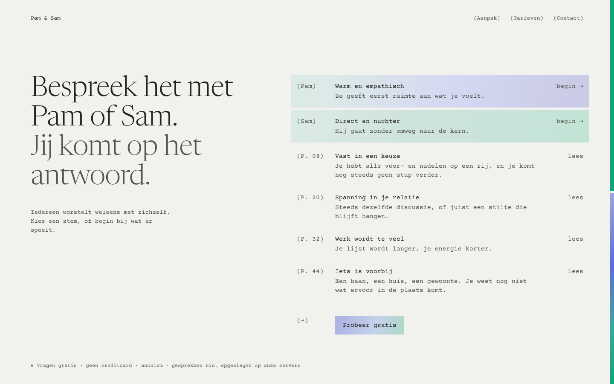
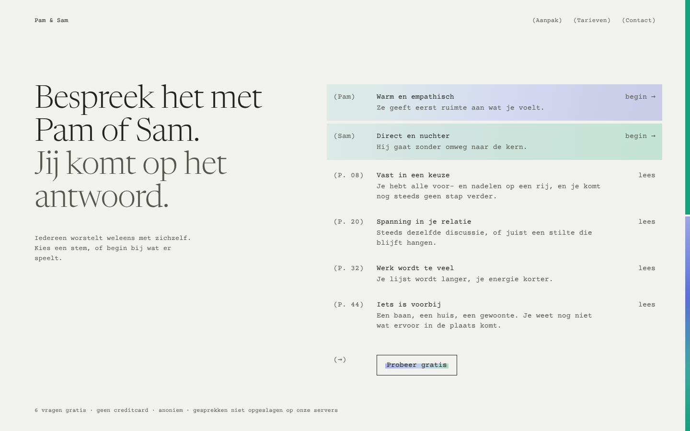
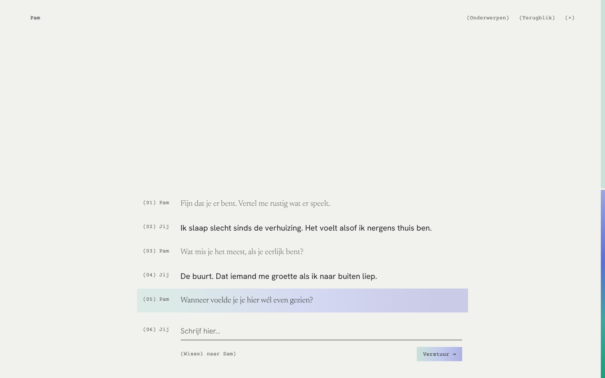
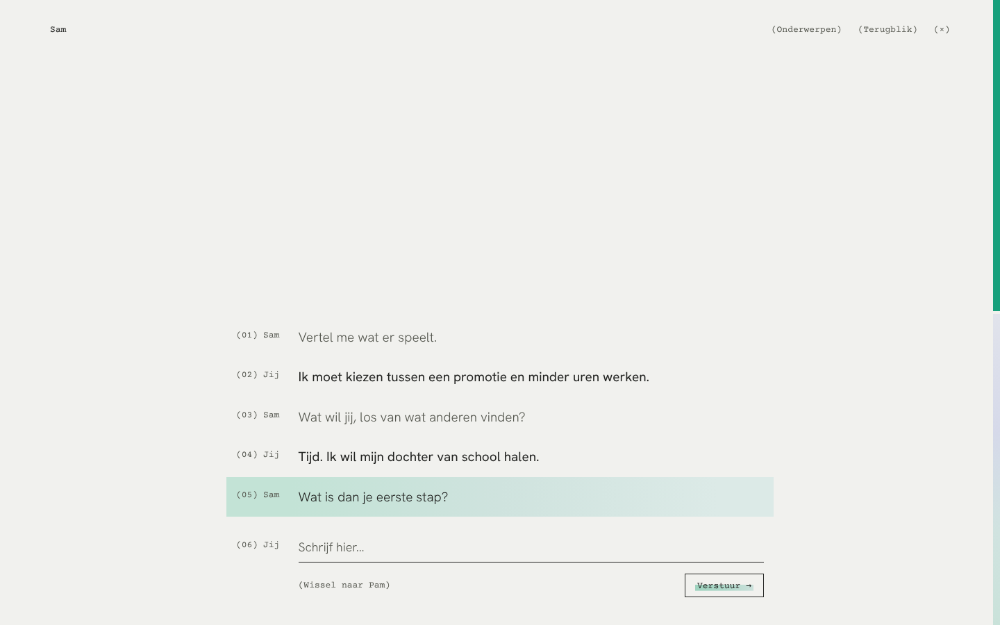
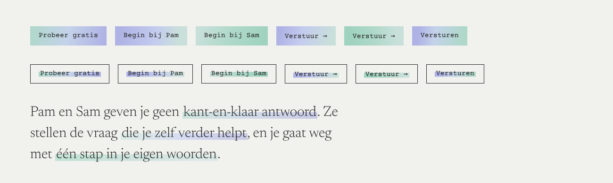
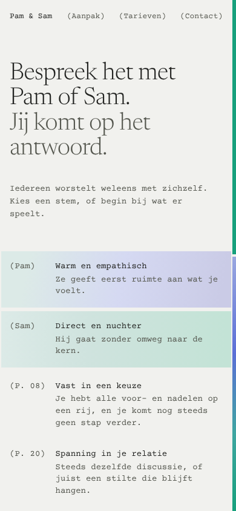
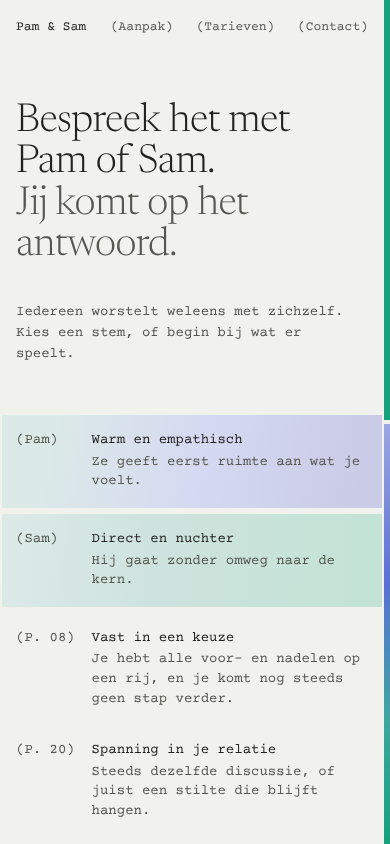
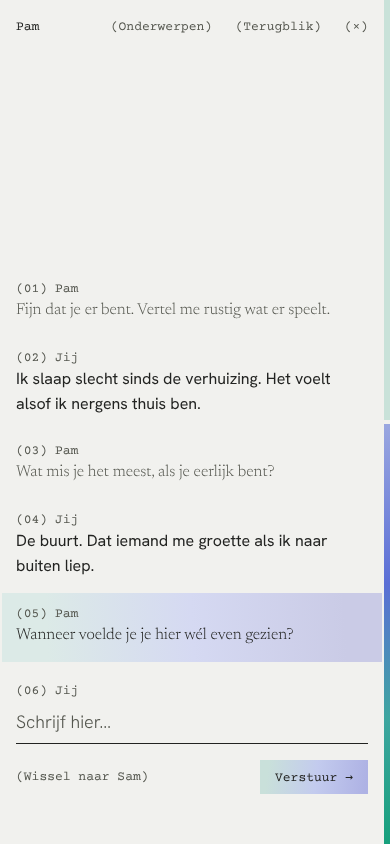
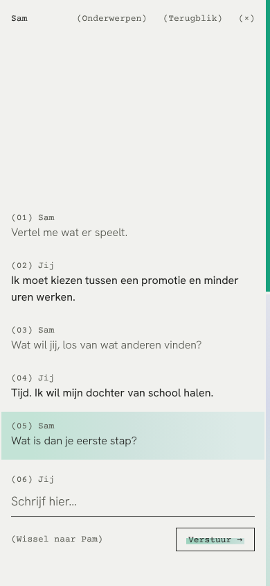

Markeren wordt de huisstijl. Elke markering is een eigen, net iets andere versie van het verloop, zoals een markeerstift nooit twee keer hetzelfde trekt. Pam en Sam staan even sterk bovenaan, elk met hun eigen markering.


Links de knop gevuld met het verloop, rechts een dunne lijn met een markeerstreep door de tekst. Pam markeert van lavendel naar ijs, Sam van ijs naar mint.


In het gesprek krijgt alleen de laatste vraag een markering, in de kleur van de stem. De verstuurknop volgt dezelfde stem.

Een staal: zes knoppen in beide stijlen en markeringen in lopende tekst, elk net anders. De knoppen zijn een tint dieper dan de markeringen, zodat ze opvallen zonder hard te worden.




Op de telefoon staan Pam en Sam als eerste twee regels, direct onder de kop.